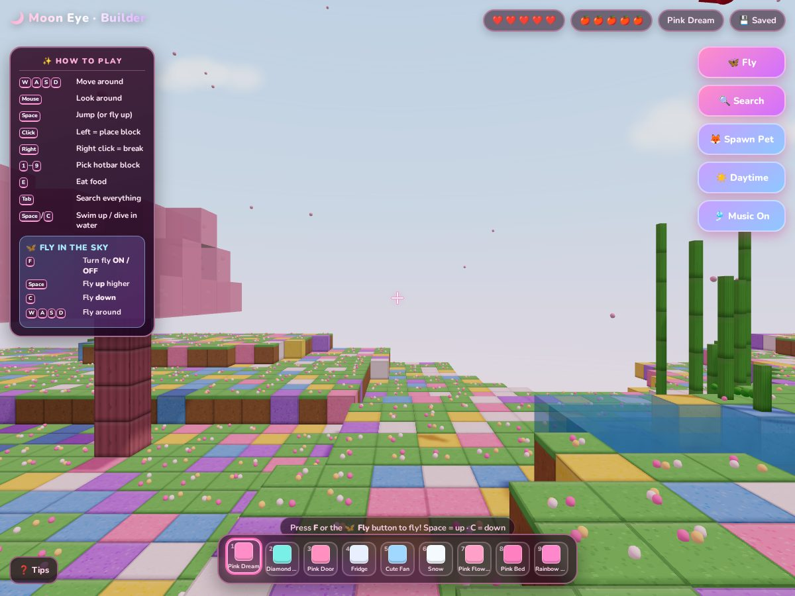

◆ SAY IT◆ DICTATE◆ BUILD◆ PLAY◆ ASK FOR MORE◆ PUBLISH◆ SAY IT◆ DICTATE◆ BUILD◆ PLAY◆ ASK FOR MORE◆ PUBLISH
01 · The Problem
Big ideas, small typing fingers
My kids had big game ideas. But they can't code, and they can't type fast.
Could they just describe a game out loud and get something they could actually play?
02 · The Setup
Their words, an AI coding agent, and me on publishing
The kids dictated their requests with Wispr Flow (voice-to-text). The text went straight into Grok Build CLI, an AI coding agent in the terminal. I handled the "please make it pink" follow-ups and publishing to GitHub Pages.
Kids' words only. No names, voices, or faces.
Screenshots show gameplay only.
I publish. The kids play.
GAME 01 · DREAMED UP BY MY DAUGHTER · LIVE ↗
Moon Eye

A cozy building world with pink blocks, cherry blossom trees, animals, flying (F key or Fly button), multi-color beds, candles and lights, and a day/night toggle.
"I want my game to be called Moon Eye… it's like Minecraft."
A voice-first prototyping workflow: learners or non-technical staff describe what they want and see it built.
Safety rules for kids built in from the start.
A simple publishing path so the result is something people can actually play.
07 · Try It · Interactive Workflow Example
Dictation to game
Step through the requests. Left: what the kid said. Middle: the cleaned-up prompt. Right: what got built.
Try it · Dictation to gameReal requests · runs in your browser
1 · What the kid said
→
2 · Cleaned-up prompt
→
3 · What got built
For Your Eyes Only
Want something like this for your business?
Bring one workflow that feels slower or more manual than it should. We'll look at it together on a free 15-minute fit call, and I'll give you an honest answer, even if that answer is "don't automate this."